Rean?lisis de videos de micromoci?n
Trampa de Paul anular ? licopodio ? rean?lisis reproducible de los 11 videos disponibles en esta carpeta
Comparaci?n por video
Las trazas contadas son componentes detectadas en cuadros muestreados, y pueden incluir detecciones repetidas del mismo rastro en cuadros distintos. c?error y Q/m?error se muestran para que se pueda auditar el intento, no como resultados finales.
| Video | Componentes | c ? error aprox. | Q/m ? error aprox. (C/kg) | R? | Cobertura | Dispersi?n centro bootstrap | Estado |
|---|---|---|---|---|---|---|---|
| WhatsApp Video 2026-09-26 at 8.32.19 PM.mp4 | 27 | 1.382 ? 0.509 | 0.0023 ? 0.00089 | 0.243 | 145.5? | 25.2 px | Exploratorio; no validado |
| WhatsApp Video 2026-09-26 at 8.32.33 PM.mp4 | 46 | 2.354 ? 0.502 | 0.00392 ? 0.00095 | 0.024 | 123.9? | 26.3 px | Exploratorio; no validado |
| WhatsApp Video 2026-09-26 at 8.32.44 PM.mp4 | 37 | 1.281 ? 0.674 | 0.00213 ? 0.0011 | 0.097 | 80.2? | 120.8 px | Exploratorio; no validado |
| WhatsApp Video 2026-09-26 at 8.33.20 PM.mp4 | 11 | 1.659 ? 1.214 | 0.00276 ? 0.002 | -0.397 | 27.5? | 96.4 px | Exploratorio; no validado |
| WhatsApp Video 2026-09-26 at 8.33.30 PM.mp4 | 14 | 0.574 ? 2.499 | 0.000954 ? 0.0042 | -0.138 | 21.9? | 265.4 px | Exploratorio; no validado |
| WhatsApp Video 2026-09-26 at 8.33.50 PM.mp4 | 20 | 0.971 ? 0.378 | 0.00162 ? 0.00065 | 0.299 | 90.9? | 51.8 px | Exploratorio; no validado |
| WhatsApp Video 2026-09-26 at 8.34.13 PM.mp4 | 16 | 0.315 ? 0.308 | 0.000525 ? 0.00052 | 0.047 | 44.7? | 269.2 px | Exploratorio; no validado |
| WhatsApp Video 2026-09-26 at 8.34.22 PM.mp4 | 10 | 0.286 ? 0.653 | 0.000475 ? 0.0011 | 0.052 | 18.5? | 291.6 px | Exploratorio; no validado |
| WhatsApp Video 2026-09-26 at 8.34.34 PM.mp4 | 29 | 1.813 ? 1.101 | 0.00302 ? 0.0019 | -0.073 | 124.1? | 106.7 px | Exploratorio; no validado |
| WhatsApp Video 2026-09-26 at 8.34.49 PM.mp4 | 36 | 0.921 ? 0.528 | 0.00153 ? 0.0009 | -0.283 | 55.9? | 71.9 px | Exploratorio; no validado |
| WhatsApp Video 2026-09-26 at 8.34.58 PM.mp4 | 41 | 1.245 ? 0.582 | 0.00207 ? 0.001 | 0.118 | 89.5? | 106.2 px | Exploratorio; no validado |
Vista conjunta
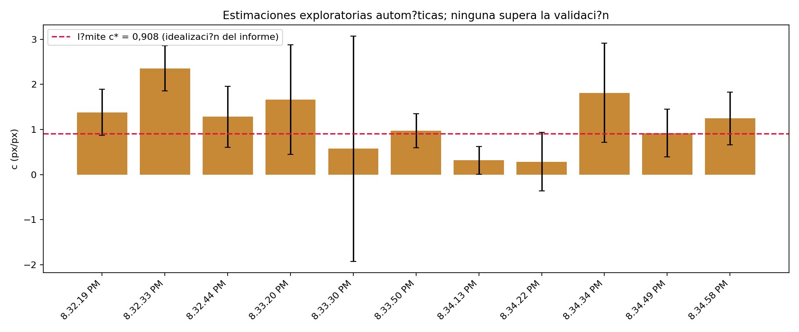
El l?mite c*=0,908 se dibuja como referencia del informe; que una estimaci?n lo cumpla no valida por s? solo el ajuste.
Qu? hice
- Le? el informe y
contexto_fisico.pdfsuministrados aqu?. - Inspeccion? cuadros representativos de cada video. Los archivos son 640?480 y rondan 21,45 fps, duraci?n de unos 21?50 s; solo est?n disponibles 11 videos aunque el informe analiza 20 y reporta dos grupos.
- Tom? 40 cuadros equiespaciados por video (en vez de selecci?n aleatoria), umbral fijo 40 en canal rojo, componentes conexas de ?rea 150?8000 px? y relaci?n de aspecto ?2,5. ?Elongaci?n m?nima de 2,5 px? del informe no define inequ?vocamente una condici?n; adopt? y document? esta interpretaci?n.
- Estim? longitud con esqueleto morfol?gico de 1 px y centro y pendiente con ajuste robusto simult?neo de L=cR. Repet? detecci?n con umbrales 35 y 45. Remuestre? trazas 80 veces para medir estabilidad del centro.
- Calcul? un error aproximado de c combinando sensibilidad al umbral, una asignaci?n del 3% para esqueletizaci?n y un t?rmino de centro. El 3% es una elecci?n de trabajo; no hay anotaciones manuales de referencia para calibrarlo.
Decisiones, l?mites y discrepancias con el informe
- No seleccion? dos videos ?buenos? a priori. No hay identificadores que vinculen los dos grupos del informe con estos 11 archivos, que adem?s son menos y mucho m?s cortos que los 20 videos descritos. Por eso reporto los 11 por separado.
- Los ajustes no reproducen L?R. Los R? del ajuste simult?neo son bajos (en el mejor caso, alrededor de 0,30); los centros bootstrap var?an con frecuencia decenas o centenares de p?xeles. Las coordenadas y c quedan por ello mal identificados. Con criterios de linealidad R??0,5, dispersi?n mediana del centro ?20 px y c<0,908, ning?n video queda validado.
- Los errores num?ricos no equivalen a los del informe. La incertidumbre de esqueletizaci?n del art?culo, ?ancho relativo = ?rea/L??, no proporciona una calibraci?n inequ?voca por traza. Sin trazas etiquetadas manualmente tampoco puedo verificar la sensibilidad del umbral ni el sesgo en los extremos. En consecuencia, los ? de la tabla no sustentan inferencias f?sicas.
- Las detecciones repetidas son una fuente de sesgo. Cuadros separados no garantizan configuraciones independientes; en estas grabaciones se repiten ubicaciones de trazas. El muestreo espaciado por s? solo no deduplica part?culas ni vuelve independientes las medidas.
- Q/m depende de par?metros parcialmente ausentes. El informe deja sin completar la frecuencia y VAC en el contexto experimental. Para una comparaci?n condicional us? f=50 Hz (la frecuencia de red citada en el montaje), V=1175?24 V y r?=8,90?0,50 mm. Si 1175 V fuera tensi?n pico a pico y la ecuaci?n requiere amplitud pico, el resultado cambiar?a por un factor 2. El video informa la cadencia de c?mara (~21,45 fps), que no determina la frecuencia el?ctrica.
- Observaci?n sobre dispersi?n. El informe presenta las tres fuentes como sistem?ticas en el promedio, pero luego combina el ancho de distribuci?n de c? con un ?nico error de c para atribuir dispersi?n intr?nseca. Errores comunes, sesgos de extracci?n y variaci?n entre part?culas requieren un modelo jer?rquico o mediciones repetidas independientes; la resta en cuadratura no prueba por s? sola una variaci?n f?sica real.
- Correcci?n conceptual de presentaci?n: c=L/R es adimensional (px/px); sus valores deben quedar por debajo del l?mite estable solo bajo el modelo ideal adoptado. La condici?n no reemplaza controles de calidad de las trazas o del centro.
Figuras por video
Cada punto corresponde a una componente detectada; colores indican longitud detectada. Las nubes dejan visibles el escaso abanico o los agrupamientos que debilitan el ajuste.
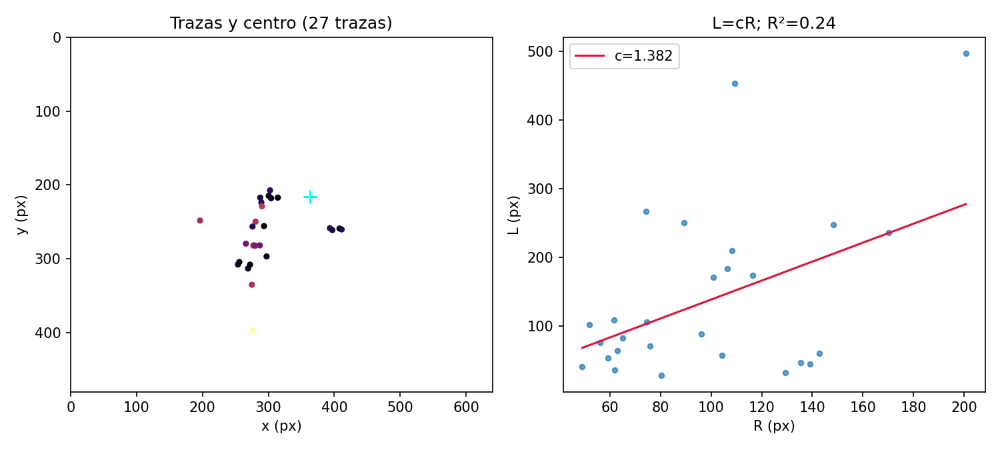
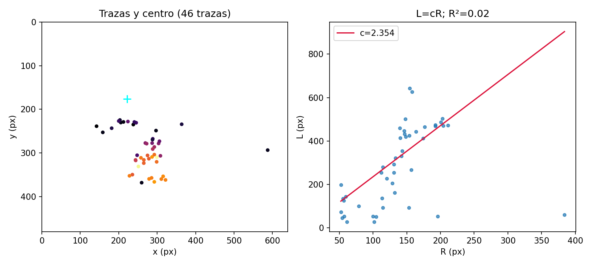
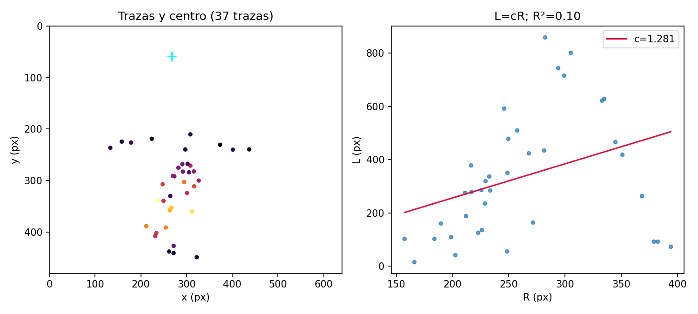
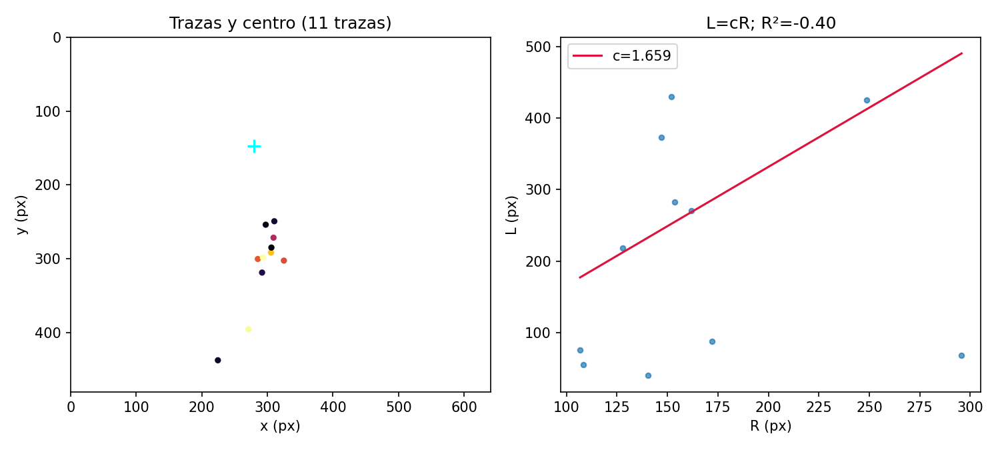
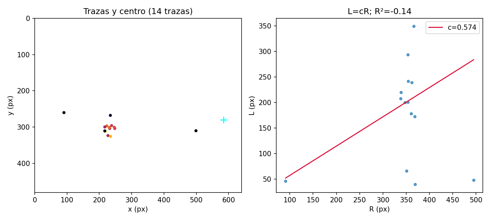
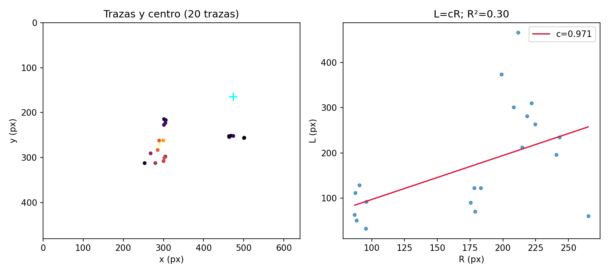
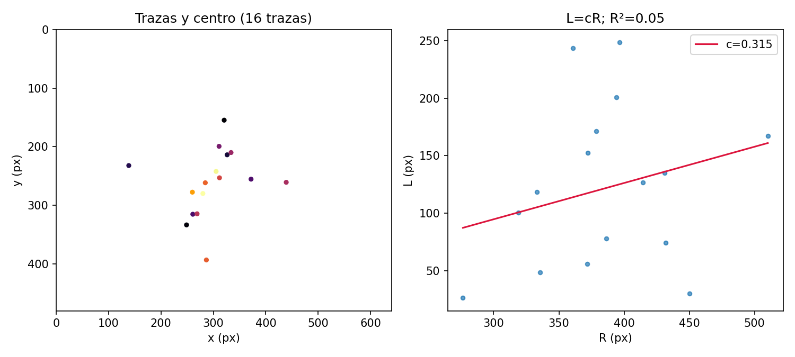
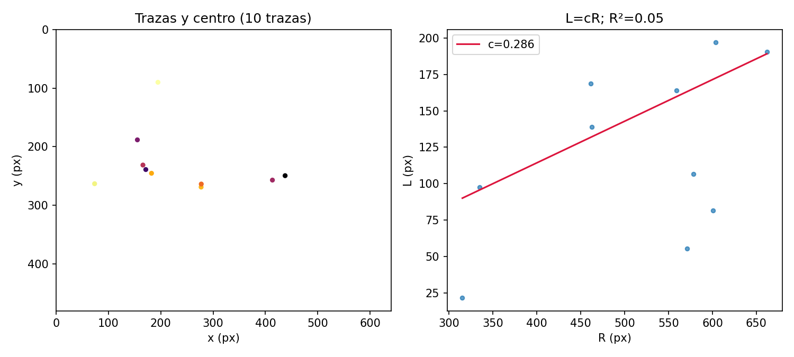
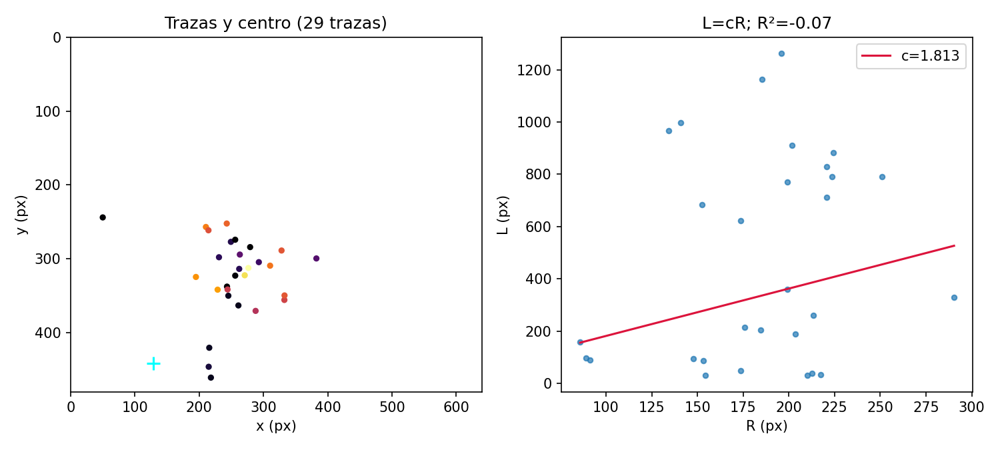
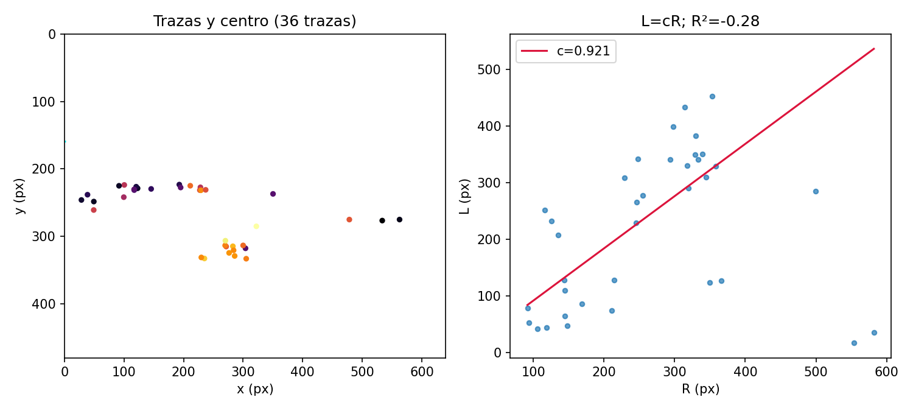
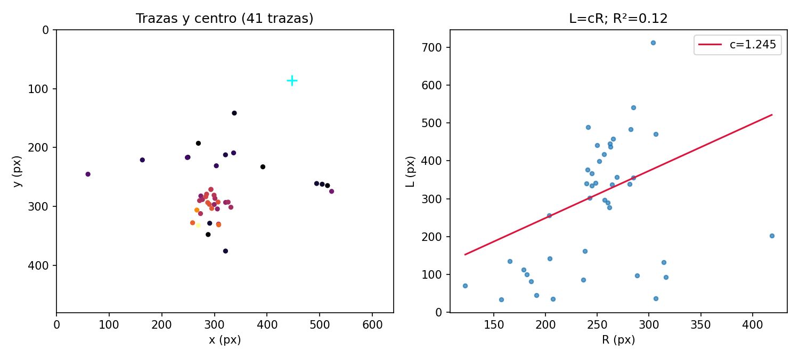
Archivos para reproducir
C?digo de an?lisis ? Tabla CSV ? Resultados JSON ? Hoja de cuadros de referencia

El c?digo est? limitado a esta carpeta. Los valores dependen de los par?metros y de la segmentaci?n descritos arriba; no se utilizaron los datos intermedios originales del grupo, porque no fueron adjuntados.